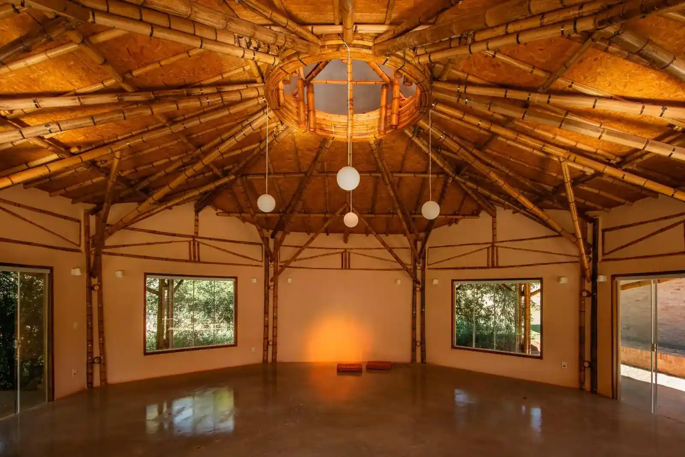
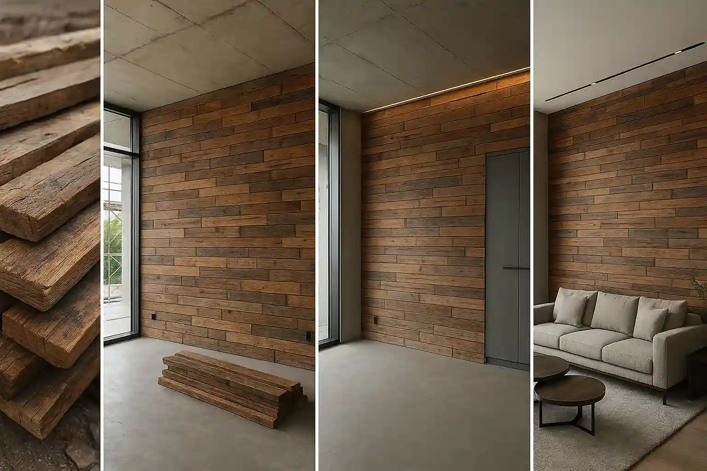
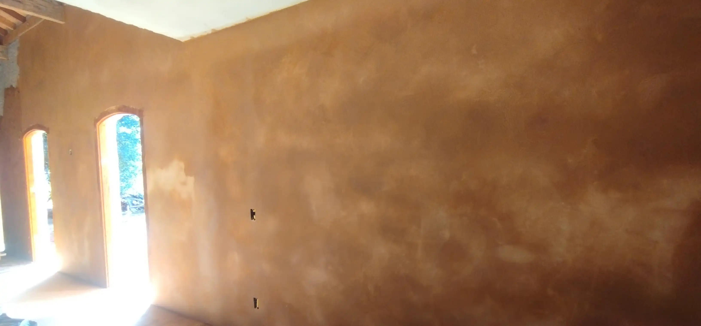
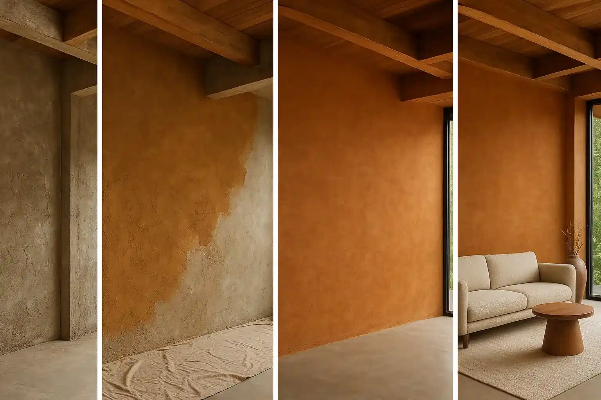

Como atuamos
Do projeto ao acabamento: soluções em bambu, taipa, madeira e rebocos naturais, pensadas para sua realidade.

Bambu
Estruturas resistentes e com baixo impacto ambiental.

Taipa de Mão
Conforto térmico e estética autêntica.

Madeira
Reaproveitamento e elegância com história.

Rebocos Naturais
Permitem paredes que respiram e duram.

Tintas Naturais
Cores que respeitam a saúde e o ambiente.